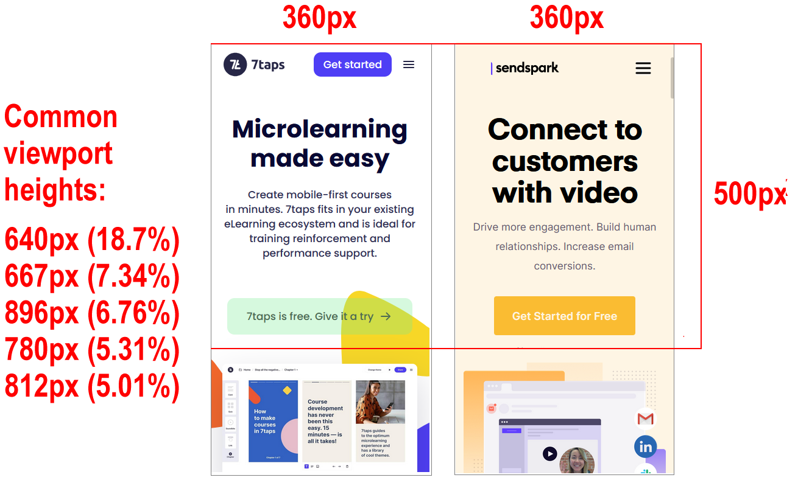
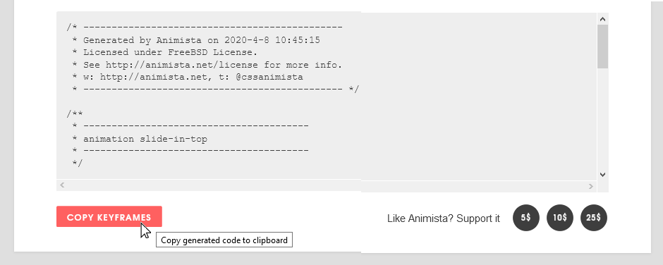

At the end of this Tutorial, you will be able to:
- Style the layout and appearance of a hero block in a sample web page.
- Animate text headlines so that they slide in from the top or left of a sample web page.
You can view the finished version of the sample web page you will create in this Tutorial by clicking the image below. The finished sample will open in a new tab of your web browser.

About hero blocks
Research has shown that a typical web user will form an opinion about a web page in just 50 milliseconds after the page loads on their screen.
- If users like what they see, they will continue to read the page – and maybe purchase a product or service.
- If they don't like what they see, they will exit the web page and go to another. And your website will have lost a potential customer.
So-called hero blocks (sometimes known as jumbotrons) are large and typically rectangular areas at the very top of a web page. They are the first item seen by users, and are intended to capture their attention and engage their interest in the web page.

Because they fill most of the top of the user's screen, hero blocks are often referred to as displaying above the fold. This term comes from the era when newspapers were printed on large sheets of paper. And, when placed in shops, they were folded in half so that only the top half of the paper was visible to customers. For this reason, newspapers printed their most attention-grabbing headlines and images above the fold.

On mobile, tablet, laptop and desktop screens, above the fold content is what the users can see without needing to scroll down the web page.
In the next two Tutorials, you will learn how to create hero blocks with background images and background videos. However, not every hero block needs to use images or videos. See the examples below.

Downloading your sample files
In this Tutorial, you will work with the following two files: a web page and a stylesheet:
- hero-text.html: Click this link to open the web page in a new tab of your web browser. Right-click anywhere in the web page and choose View Page Source from the context menu displayed. Next, right-click anywhere on the web page source and choose Save as... (Chrome or Brave) or Save Page As... (Firefox) from the context menu displayed. Save the web page in your websites/exercises folder with the name hero-text.html
- hero-text.css: Click this link to open the stylesheet file in a new tab of your web browser. Right-click anywhere in the browser window, and from the context menu, choose Save as... (Chrome) or Save Page As... (Firefox). Save the hero-text.css stylesheet file to your websites/exercises/assets/css folder.
You have now saved the two files you need for this Tutorial.
About the height of the hero block
In your web browser, view the hero-text.html web page at different screen sizes.

You can see that most but not all of the viewport height is filled by the hero block.
Here are the typical height values you will want for your hero block:
- Desktops/laptops/tablets: About 80-90% of the viewport height.

- Mobiles: At least 50% of the viewport height. 
In VS Code, open the hero-text.html web page and hero-text.css stylesheet.
You can see that the web page contains a header with a class of hero-block.
Inside this is a child element with a class of hero-text-container.
And this contains a h1 main heading and an h2 sub-heading

In the hero-text.css stylesheet file, you can see that a min-height of 500px is set for all devices.
And for desktops, laptops and tablets, the height is fixed at 80vh (80% of the viewport height.)

About ‘white space’ within the hero block
In the CSS resets, the header width is set at 100%, a full-screen width that is inherited by its hero-text-container child element.
As a result, there is no need to set any width: 100% style rule for the hero block in the hero-text.css stylesheet.
The horizontal (left and right) spacing around the h1 and h2 text is set by padding values on the hero-text-container block.

Typically, the following padding values work equally well for viewports of all sizes.

The bottom padding value of 4% is added to balance the vertical space filled by the usually large h1 heading.
Text within a hero block is most commonly centre-aligned. You achieve this by adding a text-center class to the hero-block container.

To align the hero block text at the left, simply remove the text-center class from the hero-block container.

Below are some examples of hero blocks with centre and left-aligned text.

In the hero-text.css stylesheet, you can see that only the h1 class has any spacing assigned to it: a margin-bottom of 24px.

This ‘pushes down’ the h2 sub-heading from the h1 main heading.

A value of 24px or similar should work well for all viewport sizes.
The equal vertical spacing above and below the text elements (above h1 and below h2) is created with flexbox styles. See the areas in red below.

The little amount of extra spacing along the bottom of the hero block is the padding-bottom value added earlier.
In the Introduction to CSS Flexbox Tutorial, you learnt that by setting a style rule on the parent container of justify-content: space-between, any ‘left over’ space is added as gutters beween the flexbox child elements.

Changing this style rule to justify-content: center results in the spacing being instead added equally to the left and right sides of the parent container. The child elements are now squeezed together without any gutters.

If we reduce the number of child elements to two, change the parent flexbox direction from its default of row (left-to-right) to flex-direction: column (top-to-bottom), and set a minimum-height, the result will look like that shown below.

The final step is to add a margin-bottom to the first, upper child element.
All this is achieved in the stylesheet by the following style rules in the hero-text.css stylesheet. The amount of ‘white space’ above and below the text elements will depend on the set height of the hero-block.

Updating the hero block background colour
Here are some more examples of linear gradients for you to experiment within your hero block.
/* Purple to orange - modern */ background-image: linear-gradient(90deg,#ff00cc,#333399);
/* dark Blue */ background-image: linear-gradient(90deg,#07092f,#165cc0);
Animation in web pages
In the past, adding animation (movement or other change) to a web page required using JavaScript (or Flash.) With HTML5 and CSS3, these are no longer required.
In practice, animating an element in a web page means changing one or more of the style rules (CSS properties) that control how it is displayed. Here are some CSS rules you can animate:
- color and background-color
- width and height
- transform, scale and zoom
To use CSS animation, you must specify a @keyframe that contains the ‘before’ and ‘after’ styles. More complex animations may have a whole series of intermediate style changes.
Consider the simple example below. First, here is the HTML element.
<!-- The element to be animated --> <div class="change-background-color">Change Me</div>
And here are its current CSS properties in its linked stylesheet.
/* Element class */ .change-background-color { width: 200px; height: 200px; background-color: red; }
In the stylesheet, add the following two new style rules to the class.
/* Element class */ .change-background-color { width: 200px; height: 200px; background-color: red; animation-name: bg-change; animation-duration: 4s }
Your animation name connects the element to its @keyframe. You are free to choose this. For example, you could have named your animation change-bg, new-background or whatever.
Every animation must have some animation-duration for it to work. (The default value is 0s.) In this simple example, the time chosen is 4s.
In the stylesheet, add the following @keyframe.
@keyframes bg-change { from { background-color: red } to { background-color: yellow } }
In this simple example, the keywords from and to represent 0% (start) and 100% (complete).
When you save and reload the stylesheet and view the web page, the animation will run. And when the animation is finished, the HTML element changes back to its original style.
Other style rules you could add to the .change-background-color class include animation-delay (in seconds) and animation-iteration-count (the number of times the animation should run).
The animation speed curve
The so-called speed curve of an animation is controlled by its animation-timing-function CSS property. The possible values are:
- ease: Start slow, speed up, and then end slowly. (This is default.)
- linear: Same speed from start to finish
- ease-in: Start slow and speed up.
- ease-out: Start fast and end slowly.
- ease-in-out: Similar to ease.
- cubic-bezier(n,n,n,n): Uses mathematical equation with your entered values.
Animation values may be combined and written in CSS shorthand, beginning with the property name animation. For example:
/* Element class */ .change-background-color { width: 200px; height: 200px; background-color: red; animation: bg-change 4s ease-in }
Animating elements in CSS often requires complex, easy-to-mistype code. For this reason, web developers rely on visual code generators such as the following:
Animating your hero block
In this task, you will animate the h1 heading and h2 sub-heading in your sample hero-text web page using the https://animista.net/ visual code generator.
Follow these steps to create a slide-in-top class and @keyframe.
- Go to this web page. Animista and click the Try me button.
- Across the top of the screen you can see a navigation menu bar of main options (BASIC, ENTRANCES, EXITS, TEXT ...).
For each of these main options, you can choose from a range of sub-options displayed as white text inside black circles on a draggable sub-menu.
Many of these sub-options also have sub-options of their own.

- In the main top menu, click the ENTRANCES option. Next, click the red circle containing the SLIDE-IN sub-option. Finally, click sub-sub-option named slide-in-top.

- At the right of the screen, click the {*} icon to display the CSS code that Animista has created for you.

- With the Autoprefixer option selected, click the Copy Class button.

- Paste the code into your hero-text.css file at the end of your stylesheet.
.slide-in-top { -webkit-animation: slide-in-top 0.5s cubic-bezier(0.250, 0.460, 0.450, 0.940) both; animation: slide-in-top 0.5s cubic-bezier(0.250, 0.460, 0.450, 0.940) both; }
- Return to the Animista screen, and click the Copy Keyframes button. 
- Paste that code into your hero-text.css file at the end of the stylesheet.
/* ---------------------------------------------- * Generated by Animista on 2020-4-8 10:45:15 * Licensed under FreeBSD License. * See http://animista.net/license for more info. * w: http://animista.net, t: @cssanimista * ---------------------------------------------- */ /** * ---------------------------------------- * animation slide-in-top * ---------------------------------------- */ @-webkit-keyframes slide-in-top { 0% { -webkit-transform: translateY(-1000px); transform: translateY(-1000px); opacity: 0; } 100% { -webkit-transform: translateY(0); transform: translateY(0); opacity: 1; } } @keyframes slide-in-top { 0% { -webkit-transform: translateY(-1000px); transform: translateY(-1000px); opacity: 0; } 100% { -webkit-transform: translateY(0); transform: translateY(0); opacity: 1; } }
You have now finished creating the slide-in-top class. - When you apply this class to a heading or element in a web page, you may find that the animated element moves down a little too quickly.
In the hero-text.css stylesheet, increase the time taken for the sliding animation from 0.5s to 1s as shown below.
.slide-in-top { -webkit-animation: slide-in-top 1s cubic-bezier(0.250, 0.460, 0.450, 0.940) both; animation: slide-in-top 1a cubic-bezier(0.250, 0.460, 0.450, 0.940) both; }
Next, follow these steps to create a slide-in-left class and @keyframe.
- Return to the main Animista web page.
- In the menu across the top of the web page, click the ENTRANCES option.
- Next, click the red circle containing the SLIDE-IN sub-option.
- Finally, click sub-sub-option named slide-in-left.

- At the right of the screen, click the {*} icon to display the CSS code that Animista has created for you.
- With the Autoprefixer option selected, click the Copy Class button.

- Paste the code into your hero-text.css file at the end of your stylesheet.
.slide-in-left { -webkit-animation: slide-in-left 0.5s cubic-bezier(0.250, 0.460, 0.450, 0.940) both; animation: slide-in-left 0.5s cubic-bezier(0.250, 0.460, 0.450, 0.940) both; }
- Return to the Animista screen, and click the Copy Keyframes button.

- Paste that code into your hero-text.css file at the end of the stylesheet.
/* ---------------------------------------------- * Generated by Animista on 2020-4-8 10:45:15 * Licensed under FreeBSD License. * See http://animista.net/license for more info. * w: http://animista.net, t: @cssanimista * ---------------------------------------------- */ /** * ---------------------------------------- * animation slide-in-left * ---------------------------------------- */ @-webkit-keyframes slide-in-left { 0% { -webkit-transform: translateX(-1000px); transform: translateX(-1000px); opacity: 0; } 100% { -webkit-transform: translateX(0); transform: translateX(0); opacity: 1; } } @-webkit-keyframes slide-in-left { 0% { -webkit-transform: translateX(-1000px); transform: translateX(-1000px); opacity: 0; } 100% { -webkit-transform: translateX(0); transform: translateX(0); opacity: 1; } }
You have now finished creating the slide-in-left class.
Applying the animated text classes
You will now apply the two new animated text classes in your stylesheet to your web page.
- In your hero-text.html file, add the slide-in-top class to your <h1> heading as shown below.
- Add the slide-in-left class to your <h2> sub-heading as shown below.

✅ That’s it. You have now successfully completed this Tutorial.
Click hero-text.html to view a finished sample of this web page in a new tab of your web browser.
Updating your website home page
Now that you have updated and styled a new web page, let’s add a hyperlink to it on the ‘home page’ of your web site. Follow the steps below:
- In VS Code, open this HTML file in your ‘main’ websites folder: index.html
- Copy-and-paste the following new line to your web page at end of current list of web pages.
<p><a href="exercises/hero-text.html">Hero block with animated text</a></p>
Save your index.html web page and view the result in your browser.
Uploading your files to GitHub
After finishing your web page and stylesheet, you are now ready to upload them to your account on GitHub.
- Open a new tab in your web browser and go to GitHub.com. If you are not already signed in to your GitHub account, sign in now.

- On your GitHub home page, click the ‘repo’ that holds your web pages. Its name will look as follows, where username is your chosen username on GitHub.
username.github.io

- On the next GitHub screen displayed, near the right of the screen, you can see a button named Add file. Click on it.

- From the dropdown list displayed, choose the option Upload files.

- In File Explorer (Windows 10) or Finder (Apple Mac), drag-and-drop your index.html file and your 📁 exercises sub-folder to upload them to your repository on GitHub.

- Scroll down to the bottom of the GitHub screen, and accept or edit the short message (Add files via upload) in the Commit changes box.
- Finally, click the green Commit changes button to upload your files.

Your updated home page and sample web page are now published on GitHub at web addresses similar to the following:
https://username.github.io/index.html
https://username.github.io/exercises/hero-text.html
It may take a few minutes for your uploaded files to appear on GitHub.